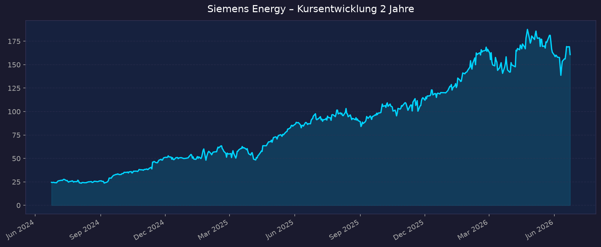
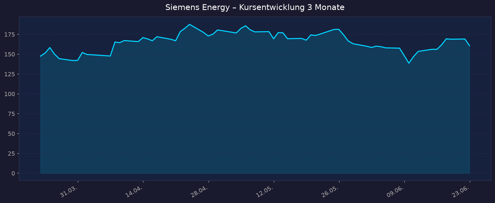

Hinweis: Siemens Energy ist ein eigenständiges Unternehmen (Spin-off 2020) — nicht zu verwechseln mit der Siemens AG (SIE).
📈 1. Kursentwicklung
Aktueller Kurs: 160,80 EUR | Veränderung heute: ca. -4,9 % (Vortagesschluss 169,14 EUR; intraday-Konsolidierung nach starkem Lauf)
Chart – 2 Jahre

Chart – 3 Monate

Interaktiv: TradingView XETR:ENR
| Zeitraum | Kurs Start | Kurs Ende | Veränderung |
|---|---|---|---|
| 2 Jahre | 24,48 EUR | 160,80 EUR | +557 % |
| 3 Monate | 147,60 EUR | 160,80 EUR | +8,9 % |
| 52-Wochen-Hoch | — | 191,66 EUR | — |
| 52-Wochen-Tief | — | 83,32 EUR | — |
Die in der Ausgangsthese genannten +97 % auf 12-Monats-Sicht decken sich grob mit den recherchierten Jahresperformance-Angaben (+39 % bis +99 %, je nach Quelle/Stichtag). Auf 2-Jahres-Sicht ist die Aktie regelrecht explodiert (Tief 2023 bei den Siemens-Gamesa-Verlusten als Ausgangspunkt).
💹 2. KGV-Entwicklung (Kurs-Gewinn-Verhältnis)
Aktuelles KGV (trailing): 63,3 | Forward-KGV: 26,8
| Zeitraum | KGV | Einordnung |
|---|---|---|
| Aktuell (trailing) | 63,3 | Sehr hoch — spiegelt noch belastete Vergangenheitsgewinne |
| Forward (FY2026e) | 26,8 | Deutlich niedriger — Markt preist starkes Gewinnwachstum ein |
| Jahresende 2025 | ~76 | Spitzenwert |
| Jahresende 2024 | ~37 | Niedriger, da Kurs noch tiefer |
| 2023 | negativ/n.a. | Verlustjahr (Siemens-Gamesa-Abschreibungen) |
Bewertung: Optisch teuer (trailing 63x). Entscheidend ist das Forward-KGV von ~27, das die Gewinnverdopplung aus der angehobenen Guidance (~4 Mrd. EUR Nettogewinn FY2026) berücksichtigt. Die Bewertung lebt von der Erwartung, dass das Margen- und Gewinnwachstum anhält — ambitioniert, aber durch den Auftragsbestand untermauert.
💰 3. Sales Multiple (Kurs-Umsatz-Verhältnis / P/S)
Aktuelles P/S-Verhältnis: 3,41 (yfinance TTM) / ~3,6 (companiesmarketcap, Juni 2026)
| Zeitraum | P/S Ratio | Einordnung |
|---|---|---|
| Aktuell (Juni 2026) | ~3,4–3,6 | Für Industrials erhöht, aber kein Extremwert |
| Jahresende 2025 | ~2,7 | — |
| Jahresende 2024 | ~1,07 | — |
| 2023 | ~0,30 | Tief — Krisenbewertung |
Trend: Klar steigend — P/S hat sich seit 2023 verzehnfacht. Bei ~39 Mrd. EUR Umsatz und ~137 Mrd. EUR Marktkapitalisierung ist das P/S mit ~3,4 für ein Hardware-/Anlagenbaugeschäft hoch, aber weit entfernt von Software-Multiples. Hinweis: Eine Quelle nannte 12,9 — das ist offensichtlich fehlerhaft und wurde verworfen (konsistent sind 3,4–3,6).
📊 4. Handelsvolumen (Trading Volume)
| Zeitraum | Ø Tagesvolumen | Auffälligkeiten |
|---|---|---|
| 10-Tage-Durchschnitt | ~3,29 Mio. Aktien | Leicht erhöht (Quartalszahlen Q2, Analysten-Updates) |
| 3-Monats-Durchschnitt | ~2,72 Mio. Aktien | Normalniveau |
| 2-Jahres-Durchschnitt | nicht verfügbar | — |
| Volumen-Peak (2J) | nicht verfügbar | typischerweise Earnings-Tage / Gamesa-News |
Volumentrend: Aktuelles Volumen leicht über dem 3-Monats-Schnitt — erhöhtes Interesse rund um Rekord-Auftragseingang, Guidance-Anhebung und Jefferies-/Deutsche-Bank-Kurszielanpassungen. (Quelle: yfinance.)
🏦 5. Insider Trades (letzte 2 Jahre)
| Datum | Name | Funktion | Kauf/Verkauf | Anzahl Aktien | Wert |
|---|---|---|---|---|---|
| nicht verfügbar | — | — | — | — | — |
3-Monats-Überblick: nicht verfügbar 2-Jahres-Überblick: nicht verfügbar
Für deutsche Aktien werden Insider-/Eigengeschäfte (Managers' Transactions / Directors' Dealings nach Art. 19 MAR) bei der BaFin und im Bundesanzeiger gemeldet, nicht über SEC/OpenInsider. In der durchgeführten Recherche ließen sich keine konkreten meldepflichtigen Eigengeschäfte von Siemens-Energy-Organmitgliedern der letzten 2 Jahre zweifelsfrei abrufen. Daher: nicht verfügbar. Primärquelle wäre BaFin Directors' Dealings bzw. die IR-Seite von Siemens Energy.
🩳 6. Short-Positionen
Aktuelle Short Quote: nicht verfügbar (keine Einzelposition ≥ 0,5 % im Bundesanzeiger eindeutig abrufbar)
| Zeitraum | Short Interest | Veränderung |
|---|---|---|
| Aktuell | nicht verfügbar | — |
| vor 3 Monaten | nicht verfügbar | — |
| vor 12 Monaten | nicht verfügbar | — |
Einschätzung: Netto-Leerverkaufspositionen ab 0,5 % des Kapitals sind im Bundesanzeiger publik. Eine konkrete, aktuell gemeldete Einzelposition für Siemens Energy konnte in dieser Recherche nicht verifiziert werden — was tendenziell für ein niedriges Short-Interesse spricht (bei einer +500-%-Aktie über 2 Jahre haben Shorts wenig Anreiz). Belastbare Zahl: nicht verfügbar.
🗞️ 7. Aktuelle Nachrichten
| Datum | Quelle | Nachricht | Relevanz |
|---|---|---|---|
| 22.06.2026 | finanzen.net / finanzen.at | Jefferies bestätigt Kaufempfehlung, hebt Kursziel auf 215 EUR (>30 % Potenzial) — begrüßt mögliche ToI-Abspaltung | Hoch |
| 19.06.2026 | ad-hoc-news / Deutsche Bank Research | Deutsche Bank bestätigt Buy, Kursziel 200 EUR; Aktie konsolidiert nach starkem Jahr | Hoch |
| Juni 2026 | Manager Magazin (via Jefferies) | Gerüchte über Abspaltung der Sparte Transformation of Industry (ToI) | Mittel |
| Mai 2026 | Siemens Energy IR | Q2 FY2026: Rekord-Auftragseingang 17,7 Mrd. EUR, Auftragsbestand 154 Mrd. EUR (Allzeithoch) | Hoch |
| Mai 2026 | Siemens Energy IR | FY2026-Guidance angehoben: Umsatz +14–16 %, Nettogewinn ~4 Mrd. EUR, FCF vor Steuern ~8 Mrd. EUR | Hoch |
| Mai 2026 | Siemens Energy IR | Grid Technologies: Prognose auf +25–27 % Umsatz / 18–20 % Marge angehoben | Hoch |
| Q2 FY2026 | Bloomberg | Siemens Energy & Mitsubishi kommen mit KI-getriebener Gasturbinen-Nachfrage kaum hinterher | Mittel |
| 2026 | div. | Gasturbinen-Verkäufe 2025 nahezu verdoppelt (100 → 194 Einheiten) | Mittel |
| Juni 2026 | finanzen.net | Konsens-Kursziel ~170–186 EUR; breite Analystenspanne (100–250 EUR) | Mittel |
| FY2026 | Siemens Energy | Siemens Gamesa nähert sich Break-even; Q2 zeigt Profit-Verbesserung | Hoch |
Sentiment: Überwiegend positiv — Analysten dominant bullish (Konsens "Buy", 19 von 25), Rekordzahlen und angehobene Guidance. Dämpfer: hohe Bewertung, Konsolidierung nach Rallye, fortbestehendes Siemens-Gamesa-Ausführungsrisiko.
📋 8. Letzte 3 Quartalsberichte
Q2 FY2026 (Quartal endete 31.03.2026, veröffentlicht ~Mai 2026)
| Kennzahl | Ist | Erwartung | Abweichung |
|---|---|---|---|
| Umsatz (Revenue) | 10,3 Mrd. EUR (+8,9 % vergleichbar) | nicht verfügbar | — |
| Auftragseingang | 17,7 Mrd. EUR (Rekord), Book-to-Bill 1,72 | — | — |
| Gewinn vor Sondereffekten | 1.164 Mio. EUR (Vj. 906) | nicht verfügbar | — |
| Nettogewinn | 835 Mio. EUR (Vj. 501) | nicht verfügbar | — |
| EPS (basic) | 0,89 EUR (Vj. 0,50) | nicht verfügbar | — |
| Free Cashflow | nicht verfügbar | — | — |
Guidance: FY2026 angehoben — Umsatz +14–16 %, Marge vor Sondereffekten 10–12 %, Nettogewinn ~4 Mrd. EUR; Grid Technologies +25–27 % / Marge 18–20 %. Kursreaktion: nicht verfügbar (Aktie im Aufwärtstrend; Guidance-Anhebung positiv aufgenommen)
Q1 FY2026 (Quartal endete 31.12.2025, veröffentlicht 11.02.2026)
| Kennzahl | Ist | Erwartung | Abweichung |
|---|---|---|---|
| Umsatz (Revenue) | nicht verfügbar (Umsatz/Cashflow „deutlich verbessert") | nicht verfügbar | — |
| EPS (bereinigt) | nicht verfügbar | nicht verfügbar | — |
| Nettogewinn | „mehr als verdoppelt" ggü. Vorjahr | — | — |
| Free Cashflow | nicht verfügbar | — | — |
Guidance: Positive Geschäftsentwicklung; im Jahresverlauf wurde die FY2026-Prognose angehoben. Kursreaktion: nicht verfügbar
Q4/Geschäftsjahr FY2025 (Geschäftsjahr endete 30.09.2025)
| Kennzahl | Ist | Erwartung | Abweichung |
|---|---|---|---|
| Umsatz (Revenue) FY2025 | 39,1 Mrd. EUR | — | — |
| EPS (bereinigt) | nicht verfügbar | nicht verfügbar | — |
| Nettomarge | nicht verfügbar | — | — |
| Free Cashflow | nicht verfügbar | — | — |
Guidance: Grundlage für die starke FY2026-Erwartung; Siemens Gamesa Break-even für FY2026 angepeilt. Kursreaktion: nicht verfügbar
Detail-Quartalszahlen (Q1 FY2026 Umsatz/EPS/FCF, exakte Erwartungswerte und Earnings-Tag-Kursreaktionen) waren in der Recherche nicht durchgängig verfügbar und sind entsprechend markiert. Primärquelle: Siemens Energy IR.
🌍 9. Marktkontext & Wettbewerb
(via market-research)
Markt / Branche: Drei Hauptsegmente — Grid Technologies (Stromnetze), Gas Services (Gasturbinen), Siemens Gamesa (Windkraft), plus Transformation of Industry.
- Transformatorenmarkt: ~64,6 Mrd. USD (2025) → ~88,5 Mrd. USD (2030), CAGR 6,5 %
- Offshore-Wind: ~73,5 Mrd. USD (2026) → ~206 Mrd. USD (2033), CAGR 15,9 %
- Gasturbinen: zweistelliges Wachstum durch KI-Strombedarf; konsolidierte EUR-TAM nicht eindeutig verfügbar
- Treiber KI-Rechenzentren: globaler Datacenter-Strombedarf ~415 TWh (2024) → ~945 TWh (2030). Großtransformatoren-Lieferzeiten von 24–30 Monaten auf bis zu 5 Jahre gestiegen → Verkäufermarkt mit Preissetzungsmacht.
| Wettbewerber | Stärke | Schwäche |
|---|---|---|
| GE Vernova (Gasturbinen, Grid) | US-Marktführer, Backlog ~100 GW Turbinen bis ~2030 ausverkauft, Skaleneffekte | Sehr hohe Bewertung, Offshore-Wind pausiert |
| Hitachi Energy (Grid/Transformatoren) | Technologieführer HVDC/Hochspannung, >90 Länder | Teil von Hitachi-Konzern, weniger fokussiert |
| Schneider Electric (Grid/Verteilung) | Digitalisierung, Smart Grid, Software | Schwächer bei Höchstspannung/HVDC |
| Mitsubishi Heavy (Gasturbinen) | H/HL-Klasse, starke Asien-Präsenz (~17 %) | Begrenzte Produktionskapazität |
| Vestas (Wind) | Weltgrößter Windturbinen-Hersteller, profitabler | Reines Windgeschäft, zyklisch |
Branchentrends:
- Elektrifizierungs-Supercycle durch KI — Equipment (Turbinen, Transformatoren, Schaltanlagen) wird zum Engpass → mehrjährige Backlogs + Preissteigerungen.
- Gasturbinen als Brückentechnologie ausverkauft — nur drei relevante Großturbinen-Hersteller, Backlogs bis ~2030, strukturell knappes Angebot stützt Margen.
- Netzausbau & Transformatoren-Knappheit — Übertragungsnetze als Flaschenhals begünstigen Grid Technologies massiv (Prognose +25–27 % Umsatz).
Marktposition: Insgesamt führend mit Rückenwind. Auftragsbestand 154 Mrd. EUR (Allzeithoch), Grid Technologies global unter den Marktführern (vs. Hitachi Energy), Gasturbinen einer der „großen Drei". Exakter Grid-Marktanteil in % nicht verfügbar (Quellen widersprüchlich).
Risiken aus dem Marktumfeld: Wind-Altlasten Siemens Gamesa (Qualitätsprobleme Plattformen 4.X/5.X, historische Verluste 4,3 Mrd. EUR FY2023 / 1,7 Mrd. EUR Folgejahr, Break-even erst FY2026), Garantierückstellungen ~2 Mrd. EUR, Lieferketten-/Umsetzungsrisiko bei Rekord-Backlog, US-Energiepolitik-Unsicherheit, Bewertungs-/Korrekturrisiko nach starker Rallye.
📝 Gesamteinschätzung
Stärken:
- Rekord-Auftragseingang (17,7 Mrd. EUR/Q2) und 154 Mrd. EUR Backlog — mehrjährige Umsatzvisibilität
- Direkter Profiteur des KI-/Elektrifizierungs-Megatrends (Stromnetze + Gasturbinen als Engpassgüter mit Preissetzungsmacht)
- Guidance mehrfach angehoben; Gewinnsprung (Q2-Nettogewinn +67 % ggü. Vorjahr)
- Grid Technologies als margenstarker Wachstumsmotor (+25–27 % Umsatz, 18–20 % Marge)
- Siemens Gamesa nähert sich dem Break-even — Wegfall des größten Verlustbringers in Sicht
Risiken:
- Hohe Bewertung (trailing KGV 63x, P/S verzehnfacht seit 2023) — wenig Fehlertoleranz
- Siemens-Gamesa-Ausführungsrisiko bleibt der zentrale Streitpunkt; Break-even noch nicht gesichert
- Lieferketten-/Kapazitätsrisiko bei der Abarbeitung des Rekord-Backlogs
- Korrekturrisiko nach +500 % in 2 Jahren; heute bereits -4,9 % intraday als Vorgeschmack
- Insider- und Short-Daten nicht transparent abrufbar (geringere Signalqualität)
Fazit: Siemens Energy ist ein operativ erstklassig laufender Profiteur des Strom-/Netz-Megatrends mit Rekordauftragsbestand und mehrfach angehobener Guidance. Die Bewertung hat den fundamentalen Fortschritt jedoch weitgehend eingeholt — das Forward-KGV von ~27 ist nur gerechtfertigt, wenn Wachstum und Gamesa-Turnaround wie geplant liefern. Hohe Qualität, hoher Preis, erhöhtes Rückschlagrisiko.
🎯 Ranking-Einordnung
| Kriterium | Gewicht | Punkte (1–10) | Gewichtet | Begründung |
|---|---|---|---|---|
| Umsatz-/EPS-Wachstum | 25 % | 9 | 2,25 | Nettogewinn mehr als verdoppelt, EPS 0,50→0,89 EUR, Umsatz +14–16 % |
| Bewertungsraum | 25 % | 4 | 1,00 | Trailing-KGV 63, P/S verzehnfacht — wenig Luft, Forward-KGV 27 ambitioniert |
| Megatrend-Stärke | 20 % | 10 | 2,00 | KI-Strombedarf + Netzausbau, Equipment als Engpassgut, Backlog bis ~2030 |
| Katalysatoren | 15 % | 8 | 1,20 | Mögliche ToI-Abspaltung, weitere Guidance-Anhebungen, Gamesa-Break-even |
| Risikoprofil | 15 % | 5 | 0,75 | Gamesa-Altlasten, Bewertungsrisiko, Kapazitäts-/Lieferkettenrisiko |
| Gesamt-Score | 100 % | — | 7,2 | Starker Megatrend & Wachstum, gebremst durch Bewertung und Gamesa-Risiko |
Szenarien 2031 (5-Jahres-Horizont)
| Szenario | Annahmen | Kursziel 2031 | Δ zum aktuellen Kurs (160,80 EUR) |
|---|---|---|---|
| Bär | Gamesa-Turnaround stockt, Megatrend-Erwartungen enttäuschen, Bewertungs-Derating | 110 EUR | -32 % |
| Base | Guidance wird geliefert, Grid wächst stetig, Gamesa profitabel, moderates Derating | 240 EUR | +49 % |
| Bull | Anhaltender KI-Supercycle, ToI-Abspaltung hebt Bewertung, Margen über Plan | 360 EUR | +124 % |
5-Jahres-Potenzial: -32 % bis +124 % (Base +49 %). Hohe Spreizung spiegelt die Abhängigkeit von Megatrend-Dauer und Gamesa-Ausführung.
00_Momentum-Aktien USA-EU-Asien – 5-Jahres-Shortlist 2026-06-23
Datenquellen: yfinance · Siemens Energy IR · Macrotrends · companiesmarketcap · finanzen.net · ad-hoc-news · Bloomberg · MarketsandMarkets · Bundesanzeiger · BaFin Kurse in EUR. Keine Anlageberatung — rein informative Auswertung öffentlicher Daten.